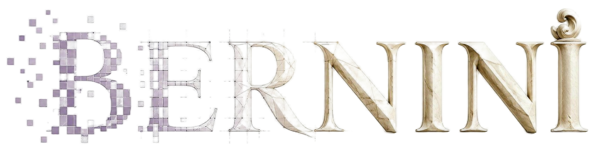
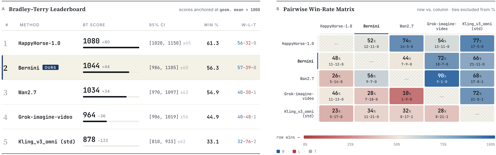

OPEN SOURCE TOOL · BLUE TECH MANUAL
Bernini：字节开源的视频生成 / 编辑资源包
一个以 Wan2.2 为底座的统一推理框架，把 MLLM 语义规划器和 DiT 渲染器串起来，覆盖图像、视频、编辑、参考驱动生成和多 GPU 推理。它更像“资源包”而不是单一脚本：代码、权重、案例、Demo、评测看板一次打包给你。
Video DiffusionDiffusersWan2.2Gradio DemoMulti-GPUPrompt Enhancer
Repo: https://github.com/bytedance/Bernini

2026-06-01开源推理代码与 Bernini-R 权重
2605.22344arXiv 论文编号
H100参考环境建议 GPU
7+任务类型覆盖
01
一句话结论
Bernini 不是“一个生成脚本”，而是一套可复用的视频生成/编辑资源栈：你可以拿到推理代码、推理权重、标准 case 文件、单/多 GPU 入口、Gradio 演示，以及一套已经内置的提示增强和评测展示。
CodeWeightsCasesDemoArenaSingle / Multi GPU
02
资源包里有什么
推理入口
infer_single_gpu.py、infer_multi_gpu.py、gradio_demo.py 三条主入口，分别对应单卡、多卡和浏览器演示。
权重路径
推荐直接下载 ByteDance/Bernini-R-Diffusers；也支持把 Wan2.2 基座与 Bernini-R checkpoint 分开加载。
案例目录
assets/testcases/ 按 t2i / i2i / t2v / v2v / rv2v / r2v 组织，case 文件把 prompt、任务类型、输入与输出路径一起封装。
加速选项
可选 prompt enhancer、FlashAttention-2/3、Open-VeOmni sequence parallel；不装也能跑，只是性能/质量上限不同。
03
它怎么工作
Prompt输入 prompt 或 case file，必要时通过 OpenAI-compatible endpoint 做提示增强。
→
PlannerMLLM 语义规划器根据任务类型与媒体输入组织条件。
→
RendererDiT 渲染器在 Wan2.2 基座上采样，支持高/低噪双 checkpoint 或 diffusers 一体权重。
→
Decode / SaveVAE 解码后写出 PNG / MP4；多 GPU 时仅 rank0 落盘。
04
关键能力矩阵
能力
体现
你该怎么理解
统一框架
生成与编辑共用同一套管线
不是多份散乱脚本，而是一条统一 inference pipeline。
资源打包
代码、权重、case、Demo、评测看板
更适合“拿来跑、拿来改、拿来复现”的资源分享。
多媒体任务
t2i / i2i / t2v / v2v / mv2v / r2v / rv2v / ads2v
覆盖文本、图像、视频、参考图、参考视频组合场景。
工程可用性
单卡 / torchrun 多卡 / Gradio UI
既能命令行批跑，也能网页交互。
05
最小上手路径
git clone https://github.com/bytedance/Bernini.git bernini && cd bernini
pip install -r requirements.txt
# 推荐：直接拿 diffusers 版权重
hf download ByteDance/Bernini-R-Diffusers --local-dir Bernini-R-Diffusers
python infer_single_gpu.py --config Bernini-R-Diffusers \
--case assets/testcases/t2i/t2i.json --num_frames 1
# 视频任务：
torchrun --nproc-per-node 8 infer_multi_gpu.py \
--high_noise_ckpt
--low_noise_ckpt --ulysses 8 \
--case assets/testcases/v2v/v2v_case1.json 06
为什么它像“资源包”
标准化输入
case 文件把任务路由、媒体输入、输出路径封装，减少命令行膨胀。
标准化输出
统一落盘 PNG / MP4，便于批量比较和复现。
标准化演示
Gradio demo 直接把同一管线暴露给浏览器。
07
资源 / 依赖 / 限制

硬约束
Python 3.11.2、CUDA 12.4、torch==2.5.1+cu124 是参考环境；H100/H800/H200 推荐度最高，FlashAttention-3 仅 Hopper 可用。
单卡 vs 多卡单卡只需基础依赖；多卡推理需要 Open-VeOmni，并通过 `--ulysses` 控制 sequence parallel 规模。
Prompt Enhancement`--use_pe` 可接 OpenAI-compatible endpoint 做提示增强，但不是强制项。
08
适合谁 / 不适合谁
适合
- 想复现/改造视频生成与编辑研究管线的人。
- 需要一套“代码 + 权重 + 案例 + Demo”的完整开源资源包。
- 有高规格 CUDA / Hopper GPU 环境，希望走高吞吐多卡推理。
不适合
- 没有 CUDA GPU，或只想用纯 CPU 跑出结果。
- 想要开箱即用的轻量应用，而不是研究型推理框架。
- 不愿意处理大模型下载、权重管理和显存配置的人。
09
核心来源
README.md、pyproject.toml、requirements.txt、bernini/cli.py、bernini/pipeline.py、infer_single_gpu.py、infer_multi_gpu.py、gradio_demo.py、configs/bernini_renderer_wan22/config.json、assets/testcases/README.md。